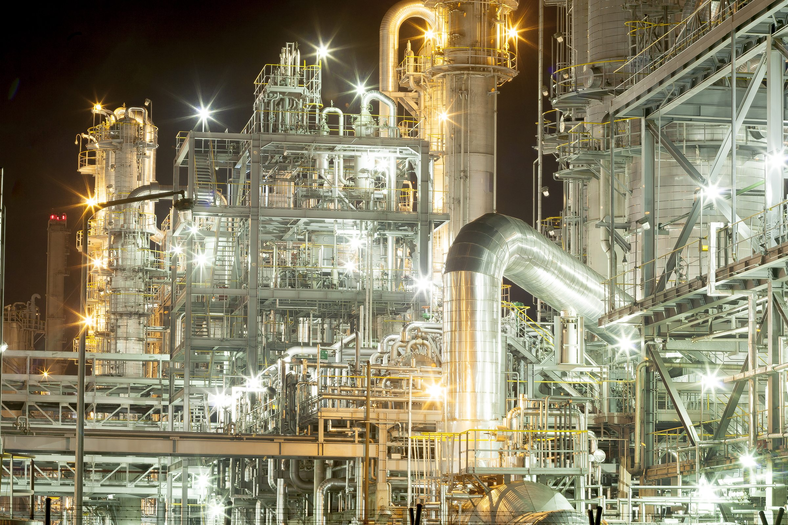
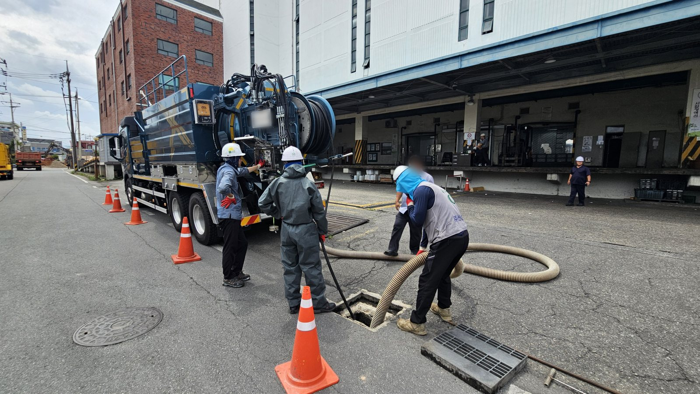
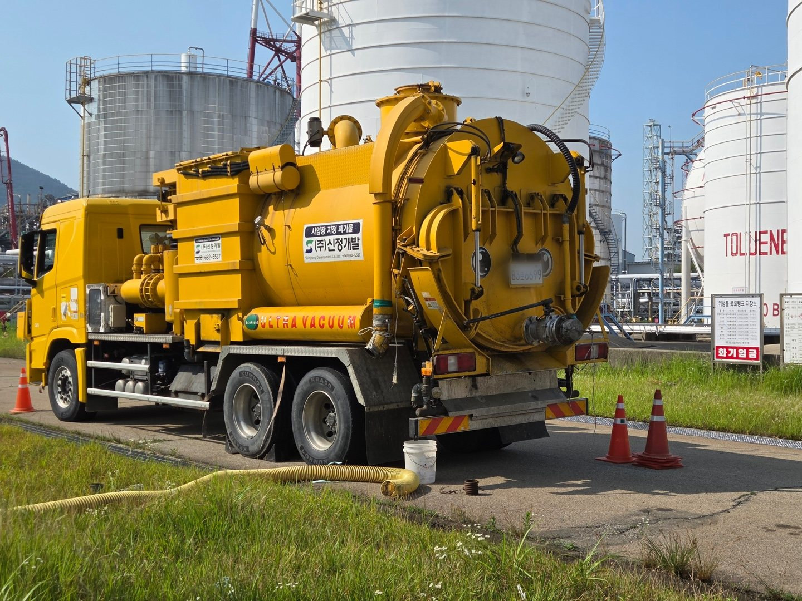
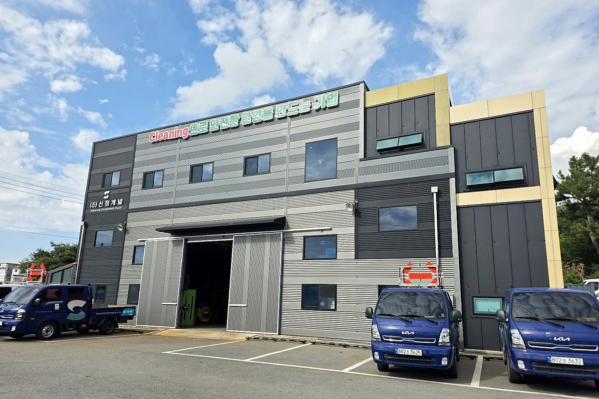

WHAT WE DO
산업설비와 환경시설,
산업설비와 환경시설,
다섯 가지 업무로 다룹니다.
산업설비·환경시설 클리닝. 설비의 구조와 잔류물 특성을 먼저 확인하고, 현장 조건에 맞는 작업 범위를 검토합니다.
사업분야 전체 보기
ROBOT & SYSTEM
설비 안의 작업을,
설비 안의 작업을,
설비 밖에서 지켜봅니다.
로봇과 원격 모니터링을 활용해 내부 작업을 수행하고, 작업자의 위험 노출을 줄이는 방향을 검토합니다. 적용 가능성은 설비 구조와 출입구, 잔류물의 성상, 온도 및 장비 이동 조건에 따라 확인합니다.
로봇·작업 시스템 자세히 보기
로봇
설비 내부에서 작업을 수행합니다.
모니터링·제어
설비 밖에서 작업 상황을 확인하고 조작합니다.
흡입차
호스로 연결해 회수물을 흡입합니다.
분리장치
해당 작업에 필요한 경우 회수물을 분리합니다.
ON SITE
현장의 장면
맨홀 주변 작업, 궤도형 장비, 차량의 모니터·제어장치, 진공흡입차와 차고의 장비를 사진으로 소개합니다.






EXPERIENCE
주요 수행 이력
회사 자료에 수록된 수행 이력 가운데 일부입니다.
수행 이력 전체 보기
ABOUT US
1992년부터
1992년부터
쌓아 온 현장 경험.
1992년 시작한 신정개발은 산업설비와 환경시설을 다루는 클리닝 전문기업입니다. 설비 유지보수, 촉매·충진물 작업, 준설과 시설 조사·보수의 경험을 바탕으로 현장의 작업 방법을 발전시켜 갑니다.

1992설립
2007법인 전환
2017기업부설연구소 설립
5개 분야다루는 업무
검토가 필요한 현장을
알려 주세요.
대상 설비와 작업 목적, 희망 일정을 보내 주시면 검토에 필요한 정보를 함께 확인하겠습니다.